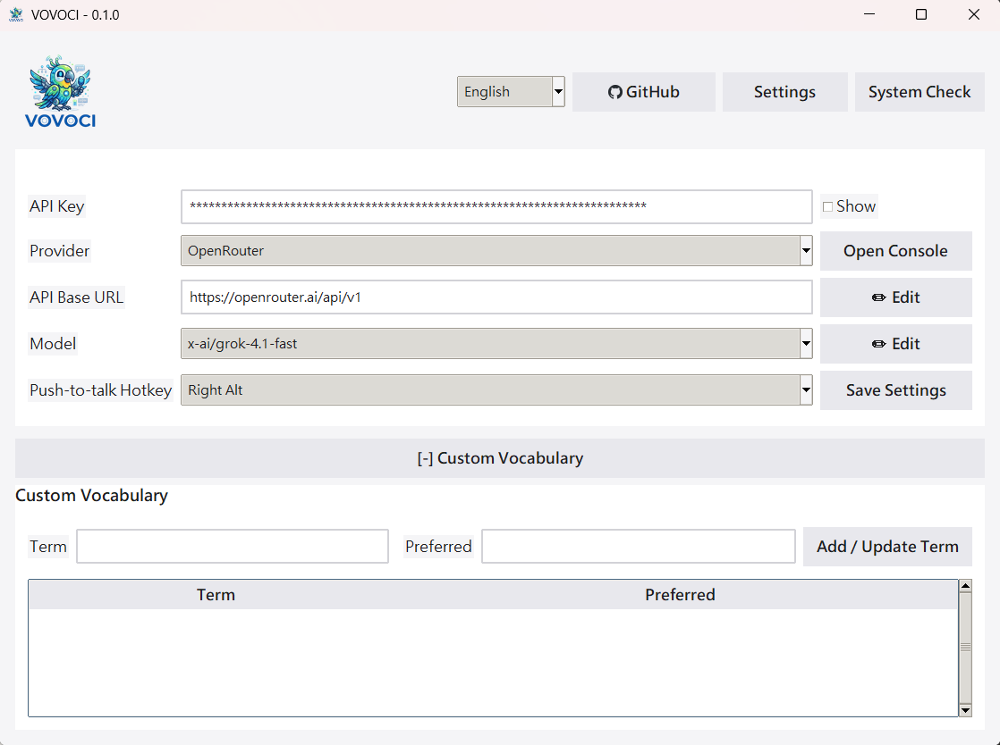
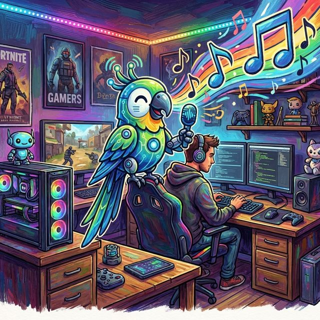

Your Structured Secretary for
Vibecoding and Real Conversation.
VOVOCI is built for fast idea-to-text workflows: coding thoughts, daily notes, social media drafts, and everyday chat. Speak naturally, let VOVOCI structure your meaning, then send clean output to the app you're already using.
One voice workflow. Many scenarios. Works across Windows software.
Latest version: v0.1.4
How It Works
VOVOCI is a structured voice workflow: set up once, then speak and ship clean text for vibecoding, conversation, notes, and content creation.
Install VOVOCI
Download and run the app. No account required, no sign-up forms, no telemetry.
Connect an LLM
Pick any supported provider and add your API key. Start with NVIDIA NIM for free access.


Speak
Hold your hotkey and talk naturally — coding thoughts, personal notes, social copy ideas, or plain conversation.
Transcribe
faster-whisper converts your speech to text on your machine. Nothing leaves your computer.
Refine
Your LLM fixes grammar, smooths phrasing, and preserves your original meaning.
Output
Structured text appears in your active app, ready to use in any Windows software.
Use Cases & Features
Built for Vibecoding
Capture implementation ideas, architecture notes, and quick TODO logic by voice, then drop structured text straight into your coding workflow.
Voice Notes
Turn fragmented speech into clean notes for planning, journaling, meetings, and daily thought capture without breaking your flow.
Social Media Drafting
Speak rough ideas for posts and captions, then get structured, publish-ready drafts you can quickly review and post.
Everyday Conversation
Use VOVOCI as your language-structuring secretary for daily communication: clearer replies, cleaner messages, and faster writing.
Works in Any Windows App
From IDEs to docs, chat tools, browsers, and forms — VOVOCI can output directly where your cursor is.
Local STT + Your LLM Choice
Keep speech transcription local with faster-whisper, then choose your preferred LLM provider for final semantic structuring.
Custom Vocabulary
Keep technical terms, product names, and preferred wording consistent across coding, conversation, and content writing.
What Does It Actually Cost?
Voice-to-text tools charge monthly subscriptions. VOVOCI is free — you only pay for the LLM API tokens you actually use. Here's what heavy daily usage looks like with OpenRouter.
Based on ~60 voice refinements per day, every day, for a full month. That's roughly 1,800 API calls — enough for power users who dictate constantly through their workday.
- Avg. tokens per call ~280 (input + output)
- Monthly tokens ~504,000
- First-token latency ~200–500 ms
- VOVOCI license Free, forever
Prices based on OpenRouter's published per-token rates. Actual costs vary by prompt length and output complexity. No markup from VOVOCI.
Term Scanner
Your AI agent already knows your codebase. VOVOCI gives it a prompt — it gives you back a vocabulary table. Import it, and every voice dictation uses the right spelling automatically.
Copy the Prompt
VOVOCI includes a built-in prompt inside the Term Scanner tab. One click copies it to your clipboard.
Paste into Your AI Agent
Feed the prompt to Claude, ChatGPT, Gemini, or any AI assistant. It analyzes your environment — tools, frameworks, APIs, domain jargon — and outputs a Markdown vocabulary table.
Import & Done
Save the agent's output as a .md file, open it in VOVOCI's scanner, and import. Every term is now applied to future voice refinements — no manual entry needed.
Please analyze my development environment, codebase, and frequently used
tools, frameworks, APIs, and domain-specific terminology.
Export a vocabulary catalog as a Markdown table:
| Term | Preferred | Note |
|---|---|---|
| Example Term | Preferred Form | Brief description |The full prompt includes instructions for tool names, API services, domain jargon, project-specific proper nouns, and terms a speech-to-text engine might misrecognize.
Providers
VOVOCI works with five LLM providers out of the box. Each connects through a standard API — you're never locked into a single vendor.
Model Performance (Speed & Latency Focus)
Prioritize lower first-token latency and faster token throughput for real-time voice structuring. Data below is based on provider benchmarks and public evaluations.
| Model | Speed (ms/token) | Latency (ms) | Best Use Case |
|---|---|---|---|
| Gemini 2.5 Flash | ~5-8 | ~300-600 | Default choice for fast mixed-language structuring |
| OpenAI gpt-oss-20b (NVIDIA) | ~8-12 | ~500-900 | Balanced cost/perf for real-time assistant output |
| Qwen2.5-Coder-7B-Instruct | ~10-16 | ~700-1200 | Coding-oriented structuring and command rewrites |
| nvidia/nemotron-nano-9b-v2 | ~7-11 | ~400-800 | Low-latency multilingual structure polishing |
| mistralai/mistral-small-24b-instruct | ~12-20 | ~900-1600 | Higher quality long responses when latency is less critical |
| x-ai/grok-4.1-fast | ~4-7 | ~200-500 | Ultra-fast reasoning with strong multilingual structuring |
Quick Interpretation
If your priority is instant interaction, choose lower latency models first, then optimize for ms/token. For most VOVOCI users, Gemini 2.5 Flash or NVIDIA gpt-oss-20b offers the strongest real-time experience.
References
Artificial Analysis | NVIDIA Build Model Cards | Hugging Face Model Hub
Dual-Hotkey Translation
Assign a second hotkey dedicated to translation. Press it instead of the regular dictation hotkey, and VOVOCI translates your speech into your configured target language automatically.
1Set up your translation hotkey
Go to Settings and assign a second hotkey for translation mode — separate from your regular dictation hotkey.
2Hold the translation hotkey and speak
Press and hold the translation hotkey, then speak naturally in any language or mixed-language format.
3Get translated, structured output
VOVOCI automatically translates and structures the result into your configured target language, ready for immediate use in any app.
Quick Start
1Clone and set up
git clone https://github.com/lovemage/vovoci.git
cd vovoci
python -m venv .venv
.venv\Scripts\activate2Install dependencies
pip install keyboard numpy sounddevice faster-whisper ctranslate2 pystray pillow3Run
python app.pyPortable ZIP users: run Run-VOVOCI-First-Time.cmd first. STT models are downloaded automatically on first use (internet required once), then cached locally for offline reuse.
Frequently Asked Questions
Completely. The app is open source under the Apache 2.0 license. No paid tiers, no feature gates, no usage limits on the app itself. LLM API costs depend on the provider you choose — but several offer generous free tiers.
For speech-to-text, no. Transcription runs locally. You do need internet for LLM refinement, since that calls your chosen provider's API. Skip refinement and VOVOCI works fully offline.
Any language faster-whisper can transcribe — dozens including English, Chinese, Japanese, Spanish, French, German, Korean, and more. Set a primary and secondary language for mixed-language dictation.
No, but it helps. faster-whisper runs on CPU fine, especially with smaller models. A CUDA-compatible GPU speeds up transcription if you're using larger models.
Depends on the provider. NVIDIA NIM offers free-tier endpoints. OpenRouter has pay-per-token with low-cost options. Google Gemini has a free tier. VOVOCI doesn't add any fees on top.
Not today. VOVOCI relies on Windows-specific APIs for hotkey hooks, window detection, and auto-paste. The project is open source — contributions are welcome.